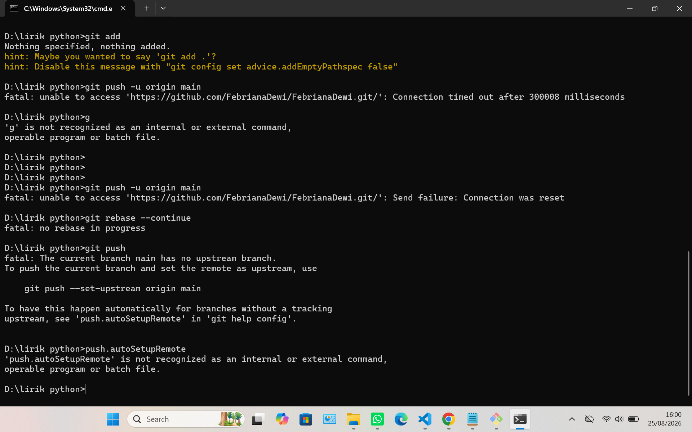

Kumpulan project dan sertifikat yang telah kami kerjakan/peroleh.

Website portofolio resmi kelompok kami untuk menampilkan identitas kelompok, project, sertifikat, dan kontak anggota. Dibangun dari template dasar, dimodifikasi sendiri, dan di-deploy menggunakan GitHub Pages.
Lihat Project